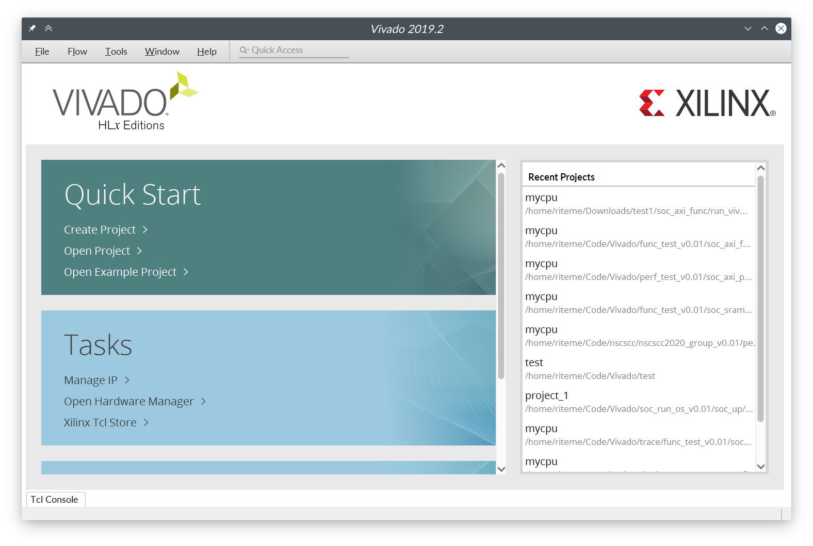
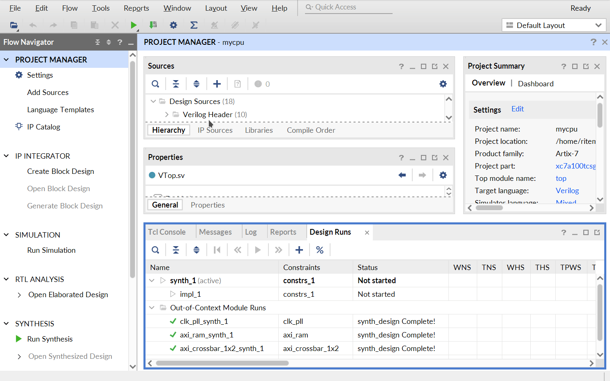
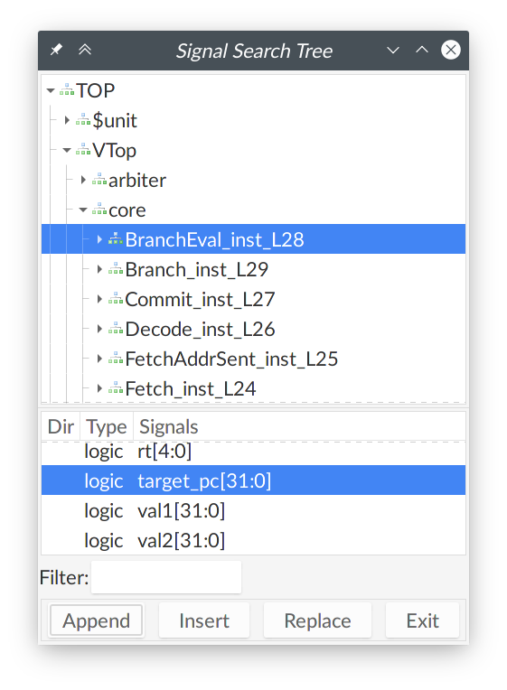

计算机系统基础（下）荣誉课程。2021 年春季。
- 实验课时间： 每周一，15:25-17:05 p.m.
- GitHub 仓库： FDUCSLG/ICS-2021Spring-FDU
- 课程首页： https://fducslg.github.io/ICS-2021Spring-FDU/
- 答疑平台： FDUCSLG Slack，#sig-architecture
体系结构部分的实验安排：
| 时间 | 实验课安排 | 时间 | 实验课安排 |
|---|---|---|---|
| Week 1 | 布置实验 0 布置实验 1 | Week 9 | 实验 3 提交 布置实验 4 发布挑战课题 |
| Week 2 | 实验 0 结束 | Week 10 | |
| Week 3 | Week 11 | 实验 4 提交 布置实验 5 | |
| Week 4 | 实验 1 提交 布置实验 2 | Week 12 | |
| Week 5 | Week 13 | 实验 5 提交 | |
| Week 6 | 实验 2 提交 布置实验 3 | Week 14 | |
| Week 7 | Week 15 | ||
| Week 8 | Week 16 | 提交挑战项目 |
体系结构部分
本学期体系结构部分的实验将会实现一个 MIPS32 架构的基础 5 级流水线 CPU，并且将在 FPGA 开发板上进行测试。体系结构部分一共有 5 个需要提交的实验和一个（可选的？）挑战课题。
- 实验 0：准备开发环境和测试环境。
- 实验 1：基础的五级流水线 MIPS CPU。
- 实验 2：访存仲裁和总线延时。
- 实验 3：单周期缓存（cache）。
- 实验 4：多周期乘除法器。
- 实验 5：MIPS 异常处理。
- 挑战课题：自由选择。
实验 0：开发环境
这个实验将指导你们准备后续实验的开发环境，并且运行我们提供的标准 CPU 实现（RefCPU），以方便大家熟悉开发和测试的流程。本实验无需提交。
安装 Vivado
本学期的实验要求统一使用 Vivado 2019.2。
Vivado 可以在 Windows 环境和 Linux 环境1下安装。请参见龙芯杯的资料中的 “ A6 - Vivado 安装说明” 来完成 Vivado 的安装。安装完成后，启动 Vivado 后应该能看到类似于下面的窗口：

对于 Linux 环境
如果你不想折腾 Vivado 的安装，可以找助教索要打包好的 Vivado 文件 “ xilinx.tar” 来省去下载和安装的步骤。
Linux 下 Vivado 的安装器不会安装 cable driver。我们需要手动安装 cable driver 后才能将 FPGA 开发板连接到 Vivado 上。请在终端中执行下面的命令来安装 cable driver：
export VIVADO_ROOT=/opt/xilinx/Vivado/2019.2
cd $VIVADO_ROOT/data/xicom/cable_drivers/lin64/install_script/install_drivers
sudo ./install_drivers
VIVADO_ROOT 是 Vivado 的安装位置。如果在安装时没有改动安装位置，默认位置是 /opt/xilinx/Vivado/2019.2。
如果你安装完成后找不到 Vivado 的启动项，可以在终端中启动 Vivado：
cd $VIVADO_ROOT
source ./settings64.sh
vivado
此外你可以考虑制作一个桌面启动项。
安装 Verilator
本学期的实验会引入 Verilator 作为 Vivado 外的另一个仿真器。除了 Verilator 本身外，我们还需要一些其它的软件包才能进行完整的仿真和调试的流程。请参考课程的 GitHub 仓库首页的 “ README.md” 中的指示来安装这些软件包。
我们建议你在 Linux 环境下使用 Verilator。我们会保证 Verilator 的测试至少能够在 Ubuntu 20.04 上工作。其它版本的 Linux 的发行版（例如 Ubuntu 18.04、Manjaro、ArchLinux）理论上也是可以无障碍使用 Verilator 仿真的。如果你想在 Windows 上进行实验，我们建议你使用 WSL2 或者运行一个虚拟机。
下载 Git 仓库
本学期的实验将会使用 Git 来做版本管理。你们的所有代码都将放在 Git 仓库中的指定位置，然后通过我们提供的脚本和 Vivado 工程文件（.xpr）来进行仿真和上板测试。因此，你需要在你的系统上安装 Git。想必很多同学都已经接触过 Git 了，因此这里就不再赘述 Git 的安装和配置流程了。
实验内容将在后续陆续放出。为了避免与你的工作 Git 分支有冲突，请避免直接在 master/main 分支以及 lab0、lab1、lab2、... 这些分支上做改动。我们建议你新建一个 dev 分支来编写你的代码：
git checkout -b dev
当有新的实验内容放出时（例如布置了实验 2），将你的 dev 分支 rebase 到新的实验的分支上：
git fetch origin
git checkout dev
git rebase origin/lab2
如果在 rebase 时发生冲突，请阅读 Git 输出的消息，并根据 Git 的指示解决冲突后，再使用 git rebase --continue 恢复 rebase 流程。直到没有冲突产生并且 rebase 完成为止。
RefCPU
在 Git 仓库的 source/refcpu 目录下，有我们提供的标准 CPU（RefCPU）的源代码。RefCPU 是一个多周期 CPU，其可以通过龙芯杯的所有功能测试和性能测试。我们本学期的测试主要是龙芯杯的功能测试和性能测试，因此你可以用 RefCPU 来作为你的流水线 CPU 的对照。当然，我们不能保证 RefCPU 完全没有 BUG。如果 RefCPU 有不符合 MIPS 标准的行为，请以 MIPS 标准为准，并且可以向助教反馈。
接下来将使用 RefCPU 来运行一些测试，方便大家熟悉开发流程。
运行测试 1
在仓库的 vivado 目录下有来自龙芯杯的测试。以测试 1 为例，在 Vivado 中打开文件 vivado/test1/soc_axi_func/run_vivado/mycpu_prj1/mycpu.xpr。然后点击顶部菜单栏的 “Tools” → “Run Tcl Script...”：

在弹出的对话框中选择 Git 仓库中的文件 source/refcpu/add_sources.tcl。这个 Tcl 脚本会将所有的 RefCPU 的源代码加入到 Vivado 的工程中。你可能注意到 source/mycpu 目录下也有个 add_sources.tcl，这个 Tcl 脚本就是以后加入你自己的 CPU 的源码时会用到的。源码加入后等待 Vivado 处理完成，就能在 “Sources” 窗口里看到新加入的源码/模块：

之后在左侧的 “Flow Navigator” 里面点击 “Run Simulation” → “Run Behavioral Simulation” 启动仿真。第一次仿真前因为需要综合 IP 核，所以可能比较慢，需要等待若干分钟才能启动2。之后仿真的启动速度会快很多。

点击界面下侧的 “Tcl Console” 可以看到仿真测试的输出。如果测试通过，最后应该能在这里看到类似于下面的输出：
[17532000 ns] Test is running, debug_wb_pc = 0xbfc100d8
[17542000 ns] Test is running, debug_wb_pc = 0xbfc10178
[17552000 ns] Test is running, debug_wb_pc = 0xbfc10218
[17562000 ns] Test is running, debug_wb_pc = 0xbfc102bc
----[17563425 ns] Number 8'd29 Functional Test Point PASS!!!
[17572000 ns] Test is running, debug_wb_pc = 0xbfc008f4
==============================================================
Test end!
----PASS!!!
$finish called at time : 17579574500 ps : File "/home/riteme/Downloads/ICS-2021Spring-FDU/vivado/test1/soc_axi_func/testbench/mycpu_tb.v" Line 269
run: Time (s): cpu = 00:00:17 ; elapsed = 00:03:32 . Memory (MB): peak = 7061.156 ; gain = 0.000 ; free physical = 3362 ; free virtual = 19061
测试 1 上板
想必你们在上学期已经学习过如何生成比特流文件并且将其烧录到 FPGA 开发板上了。在测试 1 的工程中直接生成比特流，然后上板运行，最终应该能看到下面的效果：

（NOTE：这是一张老图，最新的测试 1 的数码管两侧应该显示 “1c”）
Verilator 仿真
本学期会使用 Verilator 做一些额外的测试。你可以阅读附加资料中的 Verilator 仿真来了解一些基本的注意事项。
首先在 Git 仓库根目录打开一个终端，使用以下命令来用 RefCPU 跑龙芯杯的功能测试：
make vsim -j
最后应该能看到类似于下面的输出：
CONFREG: store: ignored unknown destination 0x8ffc.
CONFREG: store: ignored unknown destination 0x8ffc.
CONFREG: store: ignored unknown destination 0x8ffc.
CONFREG: load: ignored unknown destination 0x8ffc.
(info) #77 completed.
(info) #78 completed.
(info) #79 completed.
(info) #80 completed.
(info) #81 completed.
(info) #82 completed.
(info) #83 completed.
(info) #84 completed.
(info) #85 completed.
(info) #86 completed.
(info) #87 completed.
(info) #88 completed.
(info) #89 completed.
(info) testbench finished in 905987 cycles (599.199 KHz).
(warn) TextDiff: 7 error(s) suppressed.
然后用 RefCPU 运行龙芯杯性能测试中的 CoreMark：
make vsim -j VSIM_ARGS='--force-diff -m "./misc/nscscc/coremark.coe" -r "./misc/std/coremark.txt"'
最后应该能看到如下的输出：
./build/gcc/refcpu/VTop/vmain --force-diff -m "./misc/nscscc/coremark.coe" -r "./misc/std/coremark.txt"
CONFREG: store: ignored unknown destination 0x8ffc.
CONFREG: store: ignored unknown destination 0x8ffc.
CONFREG: store: ignored unknown destination 0x8ffc.
CONFREG: store: ignored unknown destination 0x8ffc.
CONFREG: load: ignored unknown destination 0x8ffc.
CONFREG: store: ignored unknown destination 0x8ffc.
CONFREG: store: ignored unknown destination 0x8ffc.
CONFREG: store: ignored unknown destination 0x8ffc.
CONFREG: store: ignored unknown destination 0x8ffc.
CONFREG: load: ignored unknown destination 0x8ffc.
coremark test begin.
arg : 0, 0, 102, 1, 7, 1, 2000
test start
computation done
2K performance run parameters for coremark.
CoreMark Size : 666
Total ns : 24578460
Iterations/Sec : 40
COREMARK/MHZ = (1000000.0/CPU_COUNT_PER_US)*NSEC_PER_USEC*results[0].iterations/total_ns
It equals to 1000*1000*iteration/total_ns
In this run, iterate=1, total_ns=24578460
Total ticks : 0
Total time (secs): 0
Iterations : 1
Compiler version : GCC4.3.0
Compiler flags :
Memory location : Please put data memory location here
(e.g. code in flash, data on heap etc)
seedcrc : 0xe9f5
[0]crclist : 0xe714
[0]crcmatrix : 0x1fd7
[0]crcstate : 0x8e3a
[0]crcfinal : 0xe714
Correct operation validated. See readme.txt for run and reporting rules.
coremark PASS!
coremark: Total Count(SoC count) = 0x2903e1
coremark: Total Count(CPU count) = 0x290399
(info) testbench finished in 2709066 cycles (612.085 KHz).
使用 GTKWave
Verilator 仿真可以生成 FST 格式的波形图，需要使用一个上古开源软件 GTKWave 来查看。我们提供了 misc/demo.fst 和 misc/demo.gtkw 作为样例波形图文件，供大家体验 GTKWave 的使用。GTKWave 的基本操作请参阅 “使用 GTKWave”。
虽然 Xilinx 官方声明中只支持 Ubuntu，但实际上其它大多数 Linux 发行版都能正常安装和使用 Vivado。
你也可以在 “Sources” 的 “IP Sources” 一栏里面提前生成所有的 IP 核（选中所有 IP 核，右键并点击 “Generate Output Products”）。这样可以同时综合多个 IP 核，速度更快，并且不用综合完就可以仿真。
实验 1：五级流水线 MIPS CPU
先修内容：《深入学习计算机系统》Chapter 4: Pipelined Y86 CPU
1.1 MIPS 微体系结构
五级流水线，属于体系结构的范畴。不同指令集的 CPU，都可以有五级流水线的实现。
指令集是微体系结构的一部分，规范了指令编码等信息。
MIPS 属于精简指令集（Reduced Instruction Set Computing，RISC）。我们需要实现的 MIPS，部分基本信息如下：
- 每条指令长度为 4 字节（32 位）。
- 32 个通用寄存器，每个寄存器 32 位。0 号寄存器只读恒为 0。
- 内存读写的最小单位为 1 字节（8 位）。
1.1.1 MIPS 指令集
详见 MIPS 手册 Ⅱ： Volume II: MIPS32 Instruction Set。
这里介绍一下本实验中将要实现的部分指令：
01ae5821 addu t3,t5,t6
| [31:26]:000000 | [25:21]:01101 | [20:16]:01110 | [15:11]:01011 | [10:6]:00000 | [5:0]:100001 |
|---|---|---|---|---|---|
| 指令类型：寄存器类型 | rs: t5 | rt: t6 | rd: t3 | 全 0 | ADDU |
操作：Reg[rd] ← Reg[rs] + Reg[rt]
25290001 addiu t1,t1,1
| [31:26]:001001 | [25:21]:01001 | [21:16]:01001 | [15:0]:0000_0000_0000_0001 |
|---|---|---|---|
| 指令类型：ADDIU | rs: t1 | rt: t1 | 立即数 immediate |
操作：Reg[rt] = Reg[rs] + Sign_Extend(immediate)
注意：该指令中的 u 表示寄存器为无符号的，是为了忽略溢出（和 C 语言的 int、unsigned 加法语义一致），立即数仍需符号位扩展。有一部分指令的立即数是 0 扩展。
8d0c0000 lw t4,0(t0)
| [31:26]:100011 | [25:21]:01000 | [20:16]:01100 | [15:0]:0000_0000_0000_0000 |
|---|---|---|---|
| 指令类型：LW | base: t0 | rt: t4 | offset |
操作：
vaddr ← Reg[base] + Sign_Extend(offset)if (vaddr[1:0] != 2'b0) Exception(Address Exception)（本实验中，可以保证vaddr是 4 字节对齐）Reg[rt] ← LoadMemory(AddressTranslation(vaddr), size = WORD)
pc = bfc00704: 0ff00f00 jal bfc03c00 <n1_lui_test>
| [31:26]:000011 | [25:0]:11_1111_0000_0000_1111_0000_0000 |
|---|---|
| 指令类型：JAL（jump and link） | instr_index |
操作：
Reg[31] ← pc + 8- 执行下一条指令时：
pc ← {pc[31:28], instr_index, 2'b00}
JAL 指令常用于函数调用。
# note: in MIPS, branch-type instructions (including j, beq) have a delay slot.
sample1:
beq zero, zero, here # branch if equal
instruction1
instruction2
here:
instruction3
# sequence is: beq -> instruction1 -> instruction3
sample2:
bne zero, zero, there # branch if not equal
instruction 4
instruction 5
instruction 6
there:
instruction 7
# sequence is: bne -> instruction 4 -> instruction 5
本实验需要实现的指令：lui、addu、addiu、beq、bne、lw、or、slt、slti、sltiu、sll、sw、j、jal、jr、addi、subu、sltu、and、andi、nor、ori、xor、xori、sra、srl、jalr。
1.1.2 虚实地址转换
指令代码、寄存器中的地址都是虚拟地址。CPU 向内存请求时，需要提供物理地址。
本实验中，只要求实现简单的虚实地址转换。
typedef logic [31:0] paddr_t;
typedef logic [31:0] vaddr_t;
paddr_t paddr; // physical address
vaddr_t vaddr; // virtual address
assign paddr[27:0] = vaddr[27:0];
always_comb begin
unique case (vaddr[31:28])
4'h8: paddr[31:28] = 4'b0; // kseg0
4'h9: paddr[31:28] = 4'b1; // kseg0
4'ha: paddr[31:28] = 4'b0; // kseg1
4'hb: paddr[31:28] = 4'b1; // kseg1
default: paddr[31:28] = vaddr[31:28]; // useg, ksseg, kseg3
endcase
end
亦可以参考 RefCPU 中模块 AddressTranslator 的实现。
例如，当指令访问地址 0xbfc00380 时，实际访问的物理地址应该是 0x1fc00380。详见 MIPS 手册 Ⅲ： Volume III: MIPS32 Privileged Resource Architecture，第 29 页。
1.2 五级流水线
五级流水线的简单示意图如下：

虚线上方为内存部分的硬件，由测试文件提供。
写 CPU，就是实现 CPU 的内部，并用事先定好的接口进行封装。
1.2.1 Select PC
这一阶段在 Fetch Pipeline Register 前，选择流水线所执行的下一条指令的 PC。
可能的来源：
- 顺序的下一条指令（PC + 4）
- jump 类指令（
{pc[31:28], instr_index, 2'b00}）
等等。
1.2.2 Fetch
向 Instruction Memory 提供指令地址，并接收指令。
注意：本实验中，内存有 1 周期的固定延迟。
其行为类似于：
logic [127:0][31:0] memory;
logic [6:0] addr;
logic [31:0] data;
always_ff @(posedge clk) begin
data <= memory[addr];
end
可考虑把接受的数据直接接到下一流水段。
1.2.3 Decode
D 阶段完成：
- 指令解码，生成控制信号
- 从 Regfile（寄存器文件堆）中读取数据
- 判断是否跳转
1.2.4 Execute
E 阶段主要为 ALU。
1.2.5 Memory
M 阶段向 Data Memory 提供数据地址，并接收数据。
注意：本实验中，内存有 1 周期固定延迟。
1.2.6 Writeback
W 阶段向 Regfile 写数据。
1.2.7 Regfile
根据 MIPS 指令集架构，每条指令最多写 1 个通用寄存器，最多读 2 个通用寄存器。所以 Regfile 应设计为 1 个写端口，2 个读端口。
参考代码：
typedef logic[31:0] word_t;
typedef logic[4:0] creg_addr_t;
module regfile(
input logic clk,
input creg_addr_t ra1, ra2, wa3,
input logic write_enable,
input word_t wd3
output word_t rd1, rd2
);
word_t [31:1] regs, regs_nxt;
// write: sequential logic
always_ff @(posedge clk) begin
regs[31:1] <= regs_nxt[31:1];
end
for (genvar i = 1; i <= 31; i ++) begin
always_comb begin
if (wa3 == i[4:0] && write_enable) begin
regs_nxt[i[4:0]] = wd3;
end
end
end
// read: combinational logic
assign rd1 = (ra1 == 5'b0) ? '0 : regs[ra1]; // or regs_nxt[ra1] ?
assign rd2 = (ra2 == 5'b0) ? '0 : regs[ra2];
endmodule
1.2.8 Pipeline register
五级流水线中，会有阻塞与气泡，所以流水线寄存器需要提供这些机制。
参考代码：
typedef struct packed {
logic a;
} fetch_data_t;
module dreg (
input logic clk, resetn,
input fetch_data_t dataF_new,
input logic enable, flush,
output fetch_data_t dataF
);
always_ff @(posedge clk) begin
if (~resetn | flush) begin // flush overrides enable
dataF <= '0;
end else if (enable) begin
dataF <= dataF_new;
end
end
endmodule
Tips：
- W 阶段流水线寄存器不允许被阻塞。
- F 阶段流水线寄存器一般不清零。
- M 阶段流水线寄存器阻塞时（因），E 阶段流水线寄存器通常也阻塞（果），防止丢失指令。
- E 阶段流水线寄存器阻塞时（因），M 阶段流水线寄存器通常清零（果），防止指令被执行多次。
1.2.9 Hazard and Forward
这个部分代码量可能不大，但应该是本实验中最复杂的部分。
主要难点是数据冲突。本实验中，仅需考虑写后读（RAW）冲突。请思考：
- 冲突阻塞部分：D 阶段取数据，E、M、W 阶段的写数据会造成冲突。哪些情况应当阻塞流水线？
- 转发部分：哪些指令写通用寄存器？电路图中的哪些数据线可作为转发来源？转发条件是什么？优先级是什么？
分支预测失败的情况比较简单。D 阶段判断分支是否跳转；由于 delay slot 的设计，F 阶段的指令一定执行。所以，分支跳转不会有额外的惩罚（数据冲突可能存在）。
1.2.10 封装 CPU
本实验的 CPU 的最顶层封装为 SRAM 接口。见 source/mycpu/mycpu_top.sv。
module mycpu_top (
input logic clk,
input logic resetn, //low active
input logic[5:0] ext_int, //interrupt,high active
output logic inst_sram_en, // 指令内存总使能
output logic[3:0] inst_sram_wen, // 字节写使能，本实验中为全0
output logic[31:0] inst_sram_addr, // 地址
output logic[31:0] inst_sram_wdata, // 写数据
input logic[31:0] inst_sram_rdata, // 读数据
output logic data_sram_en, // 数据内存总使能
output logic[3:0] data_sram_wen, // 字节写使能，本实验中为全0或全1
output logic[31:0] data_sram_addr, // 地址
output logic[31:0] data_sram_wdata, // 写数据
input logic[31:0] data_sram_rdata, // 读数据
//debug
output logic[31:0] debug_wb_pc, // w阶段pc
output logic[3:0] debug_wb_rf_wen, // 写使能，一般为全0或全1
output logic[4:0] debug_wb_rf_wnum, // 写入的寄存器
output logic[31:0] debug_wb_rf_wdata // 写回的数据
);
// TODO: other circuit
endmodule
为了保证和后续实验在接口上的统一，我们在 CPU 内部统一使用 DBus 接口。在 source/mycpu/SRAMTop.sv 做了从 DBus 接口到类 SRAM 接口的转换。DBus 接口定义在 source/include/common.svh 中：
typedef struct packed {
logic valid; // 是否有请求？
addr_t addr; // 请求读写的地址
msize_t size; // 读写数据的大小：1、2 或者 4 字节，分别对应 MSIZE1、MSIZE2 和 MSIZE4
strobe_t strobe; // 4 位的字节写使能信号
word_t data; // 如果写使能不为全 0，这里放写入的数据
} dbus_req_t;
typedef struct packed {
logic addr_ok; // 内存是否已经接收了地址？
logic data_ok; // 内存是否完成了访存？
word_t data; // 请求地址处读出的数据
} dbus_resp_t;
对于本次实验，因为访存是固定延时，并且所有读写的数据以及指令访存都是 4 字节的，所以
dbus_resp_t中的addr_ok和data_ok信号实际上可以忽略。addr最低两位应该始终为 0，即地址与 4 字节对齐。size始终为MSIZE4。- 写操作时
strobe为4'b1111或4'hf。
你可能会注意到还有一个 IBus 接口。IBus 接口是 DBus 接口的子集，只保留了读取数据所需要的信号。此外，你的流水线部分的顶层模块文件应该是 source/mycpu/MyCore.sv。我们建议你将你的流水线分为多个模块来实现。你可以在 source/mycpu 这个目录下新建文件或者子目录。
你可以选择在模块 SRAMTop 中做地址翻译，或是在模块 MyCore 中做地址翻译。
1.2.11 连接 debug_* 信号
龙芯杯的测试会进行 trace 的比对。这需要从你的流水线中读取一些数据。我们在 1.2.10 一节中已经看到 mycpu_top 最后有四个 debug_* 信号了。为了避免增加下层模块的接口，我们建议你使用跨模块引用来连接这些 debug_* 信号。例如：
// in mycpu_top.sv
assign debug_wb_pc = top.core.writeback.pc;
assign debug_wb_rf_wen = top.core.writeback.aha ? 4'b1111 : 4'b0;
1.3 发布包
用 Vivado 2019.2 打开 vivado/test1_naive/soc_sram_func/run_vivado/mycpu_prj1/mycpu.xpr，添加源文件后，即可开始仿真。
Tips：第一次仿真前，先点击 “IP Sources”，选中所有 IP 核源文件，右键，点击 “Generate Output Products”。几秒钟后，跳出 “OK”，然后再点仿真。
vivado/test1_naive/soft/obj/test.s 是测试的反汇编文件，有 PC、机器码、汇编码的对应。soft 目录下的其他文件里，可以找到测试的 C 代码。
source/mycpu/ 里已经有一些代码，其中：
mycpu_top.sv是顶层封装文件，仅需把 debug 信号连接上。SRAMTop.sv是 SRAM 接口封装文件，需要添加虚实地址翻译。MyCore.sv是 CPU 主体流水线文件。
你可以在该目录下随意添加源文件。在 Vivado 中执行 add_sources.tcl 后，它们都会添加到项目里。
source/include/ 里有一些头文件。
本次实验没有暂时没有使用 Verilator 进行仿真。我们会从实验 2 开始引入 Verilator，所以你需要确保你的在这次实验中编写的代码能够通过 Verilator 的编译。如果在使用 Verilator 中遇到了问题，请先阅读 Verilator 仿真寻找解决方案。
1.4 作业与提交
在 source/mycpu/ 里添加你的代码，实现五级流水线 MIPS CPU。
本实验需要实现的指令：lui、addu、addiu、beq、bne、lw、or、slt、slti、sltiu、sll、sw、j、jal、jr、addi、subu、sltu、and、andi、nor、ori、xor、xori、sra、srl、jalr。
1.4.1 通过标准
- 打开原有
mycpu.xpr，用source/mycpu/add_sources.tcl添加源文件，上板显示两个绿灯。 - 在仓库根目录打开终端，运行
make verilate TARGET=mycpu/VTop，确认 Verilator 能够编译你的 CPU 代码，并且没有报告任何错误和警告。
1.4.2 实验报告要求
- 格式：PDF
- 内容：按本文档 1.2 节的思路写即可。写好姓名学号。
1.4.3 提交文件格式
18307130024/
├── report/（报告所在目录）
└── source/（源文件所在目录）
用 zip -r 18307130024.zip 18307130024/ 打包。用 unzip 18307130024.zip 检查，应在当前目录下有学号目录。
1.4.4 评分
代码 80%，报告 20%。
Deadline：2020 年 3 月 21 日 23:59:59
1.5 思考
- 流水线寄存器的 flush 信号，需要让所有信号都清零吗？
- 转发的成本是什么？有哪些限制？（板子上的组合逻辑基本部件为 LUT6 ，6 输入 1 输出，可实现 6 输入的任何给定逻辑式）
- 不同指令需要用到的流水线阶段可能不同：加法指令似乎不需要经过 Memory 阶段。能让它跳过 M 阶段吗？
实验 2
无可奉告。
实验 3
无可奉告。
实验 4
无可奉告。
实验 4
无可奉告。
挑战课题
无可奉告。
操作系统部分
无可奉告。
附加资料
这一部分包含一些与实验内容相关的资料。
外部资料
这里列举了一些和本学期实验课程以及龙芯杯相关的文档。这些资料不一定都会在本学期的实验中用到。各位同学可以根据自己的需求来翻阅。
MIPS 架构
- Volume I: Introduction to MIPS32 Architecture
- Volume II: MIPS32 Instruction Set
- Volume III: MIPS32 Privileged Resource Architecture
- MIPS 指令编码
SoC 部分
- AMBA AXI Protocol Specification v1.0
- AMBA AXI and ACE Protocol Specification
- UltraScale Architecture Libraries Guide
- BRAM & LUTRAM
2019 年龙芯杯幻灯片
2020 年龙芯杯文档
- A0 - 大赛技术方案解读
- A1 - 参赛指南
- A3 - “系统能力培养大赛” MIPS 指令系统规范
- A4 - 龙芯体系结构教学实验箱（Artix-7）介绍
- A6 - Vivado 安装说明
- A7 - Vivado 使用说明
- A8 - 交叉编译工具链安装
- A9 - CPU 仿真调试说明
- A10 - FPGA 在线调试说明
- A11 - Trace 比对机制使用说明
- A12 - 类 SRAM 接口说明
其它
- NonTrivial-MIPS
- NSCSCC 2019 Final Report
- Compiler Explorer
- “龙芯杯” 全国大学生计算机系统能力培养大赛信息汇总
- Verilator Manual
- Understanding FPGA Architecture
- GTKWave 3.3 Wave Analyzer User’s Guide
指令列表
在下表中，“✓” 表示其所在列对应的测试中包含或者会用到这条指令。
| 指令 | 测试 1 | 测试 2 | 测试 3 | 测试 4 | 性能测试 |
|---|---|---|---|---|---|
lui | ✓ | ✓ | |||
addu | ✓ | ✓ | |||
addiu | ✓ | ✓ | |||
beq | ✓ | ✓ | |||
bne | ✓ | ✓ | |||
lw | ✓ | ✓ | |||
or | ✓ | ✓ | |||
slt | ✓ | ✓ | |||
slti | ✓ | ✓ | |||
sltiu | ✓ | ✓ | |||
sll | ✓ | ✓ | |||
sw | ✓ | ✓ | |||
j | ✓ | ✓ | |||
jal | ✓ | ✓ | |||
jr | ✓ | ✓ | |||
add | ✓ | ||||
addi | ✓ | ✓ | |||
sub | ✓ | ||||
subu | ✓ | ✓ | |||
sltu | ✓ | ✓ | |||
and | ✓ | ✓ | |||
andi | ✓ | ✓ | |||
nor | ✓ | ✓ | |||
ori | ✓ | ✓ | |||
xor | ✓ | ✓ | |||
xori | ✓ | ✓ | |||
sllv | ✓ | ||||
sra | ✓ | ✓ | |||
srav | ✓ | ||||
srl | ✓ | ✓ | |||
srlv | ✓ | ||||
bgez | ✓ | ✓ | |||
bgtz | ✓ | ✓ | |||
blez | ✓ | ✓ | |||
bltz | ✓ | ✓ | |||
bltzal | ✓ | ||||
bgezal | ✓ | ✓ | |||
jalr | ✓ | ✓ | |||
div | ✓ | ✓ | |||
divu | ✓ | ✓ | |||
mult | ✓ | ✓ | |||
multu | ✓ | ||||
mfhi | ✓ | ✓ | |||
mflo | ✓ | ✓ | |||
mthi | ✓ | ||||
mtlo | ✓ | ||||
lb | ✓ | ✓ | |||
lbu | ✓ | ✓ | |||
lh | ✓ | ✓ | |||
lhu | ✓ | ✓ | |||
sb | ✓ | ✓ | |||
sh | ✓ | ✓ | |||
syscall | ✓ | ✓ | |||
break | ✓ | ✓ |
Verilator 仿真
在本学期的实验中，除了 Vivado 外，我们会引入 Verilator 来进行仿真。Verilator 是一个支持 Verilog/SystemVerilog 的周期精确（cycle-accurate）开源仿真器。Verilator 将用 Verilog/SystemVerilog 的 RTL 级描述的模块（module）综合为一个 C++ 模型。这个 C++ 模型一般称为 verilated model，在本学期的实验中是一个叫做 VModel 的 C++ class。然后再通过编写 C++ 代码来提供模型的输入，以及检查模型的输出。在开源领域，特别是与 RISC-V 相关的开源芯片项目，普遍使用 Verilator 进行整个 CPU 的仿真，例如东京大学的 RSD。
使用 Verilator 进行仿真有两个优点。首先，仿真速度一般比 Vivado 更快。以龙芯杯性能测试中的 CoreMark 为例，在 Vivado 上仿真一次通常需要十多分钟，而在 Verilator 上只用一分钟。如果不进行波形图的记录，最快只需要 3 秒就可以完成仿真。其次，使用 C++ 编写测试相比使用 SystemVeriog 而言更具灵活性，例如我们可以很方便的在 C++ 中模拟随机访存的效果，或者是将 VGA 模块的输出可视化。
Verilator 目前依然有许多不足之处。首先 Verilator 对 SystemVerilog 的语言支持还非常不完整，比如 unpacked 结构体是不支持的。此外 interface、package 这些关键字虽然支持，但是在功能上还不够完善。为了避免你的 SystemVerilog 代码不能通过 Verilator 的综合和不正确的仿真行为，请尽量避免以下事项：
- 不可综合的语法，例如延时。
initial语句。- unpacked 数组、结构体。
interface、package、class。- 小端序位标号，如
[0:31]。 - 锁存器。
logic类型的X状态和高阻抗Z状态。- 使用时钟下降沿触发。
- 异步 reset 和跨时钟域。
- 尝试屏蔽全局时钟信号。
此外，我们建议每个 SystemVerilog 文件只放一个模块，并且文件名和模块名保持一致。例如，SRLatch.sv 里面只放模块 SVLatch 的定义。更详细的内容可以参见 Verilator 手册中的 “语言限制” 一节。
综合
Verilator 只负责将 RTL 代码综合为 VModel。我们已经提供好了 make verilate 来进行综合。例如， 如果要综合 RefCPU，其顶层模块为 VTop（定义在 source/refcpu/VTop.sv 中），则可以使用下面的命令：
make verilate TARGET=refcpu/VTop
综合后的文件会放在 build 文件夹下。
如果在综合时出现错误或者警告，请按照错误消息进行修正。你需要确保你的代码没有任何错误和警告。Verilator 报告的大部分警告都是有意义的，并且 Verilator 在有警告的时候也会视为综合失败。当你发现有不太明白原因的警告时，请先查看 Verilator 手册中对于该警告的描述，确认其原因。如果你确认这个警告不会有影响，可以考虑忽略这个警告。
下面举一个实际的例子。例如，对于下面这个简单的 SR 锁存器的 Verilog 描述：
module SRLatch (
input logic S, R,
output logic Q, Qn
);
assign Q = ~(Qn | R);
assign Qn = ~(Q | S);
endmodule
将其保存到 SVLatch.sv。当我们使用 verilator --cc SVLatch.sv 命令来综合时，会得到类似于下面的警告：
%Warning-UNOPT: SRLatch.sv:3:21: Signal unoptimizable: Feedback to public clock or circular logic: 'Qn'
3 | output logic Q, Qn
| ^~
... Use "/* verilator lint_off UNOPT */" and lint_on around source to disable this message.
SRLatch.sv:3:21: Example path: Qn
SRLatch.sv:5:15: Example path: ASSIGNW
SRLatch.sv:3:18: Example path: Q
SRLatch.sv:6:15: Example path: ASSIGNW
SRLatch.sv:3:21: Example path: Qn
%Error: Exiting due to 1 warning(s)
在第一行，我们可以看到警告的类型是 UNOPT。在警告消息里面有一个对该警告的简短的描述。我们可以前往 Verilator 中 “警告和错误” 的文档搜索关于 UNOPT 的详细描述：
UNOPT
Warns that due to some construct, optimization of the specified signal or block is disabled. The construct should be cleaned up to improve simulation performance.
A less obvious case of this is when a module instantiates two submodules. Inside submodule A, signal I is input and signal O is output. Likewise in submodule B, signal O is an input and I is an output. A loop exists and a UNOPT warning will result if AI & AO both come from and go to combinatorial blocks in both submodules, even if they are unrelated always blocks. This affects performance because Verilator would have to evaluate each submodule multiple times to stabilize the signals crossing between the modules.
Ignoring this warning will only slow simulations, it will simulate correctly.
事实上就是锁存器的描述中有组合回路。可以通过在代码附近加上 /* verilator lint_off UNOPT */ 来消除 UNOPT 警告，即
/* verilator lint_off UNOPT */
assign Q = ~(Qn | R);
assign Qn = ~(Q | S);
/* verilator lint_on UNOPT */
这样上述两行 assign 就不会再报告 UNOPT 了。如果想要消除所有文件的 UNOPT 警告，需要前往 verilate/Makefile.verilate.mk 文件，在 SV_WARNINGS 变量后面添加 -Wno-UNOPT：
SV_WARNINGS = \
-Wall -Wpedantic \
-Wno-IMPORTSTAR \
-Wno-UNOPT
# add warnings that you wanna ignore.
当然，请注意在你的 SystemVerilog 代码里面应该避免组合回路而不是单纯地消除这个警告！
周期精确仿真
所谓周期精确仿真，是在确定模块输入的情况下，计算出模块在足够长时间后的输出。因此在周期精确仿真中没有延时的概念。可以理解为每次更新都是计算模块在无穷久后处于稳态时的输出。对于 CPU 这种由一个时钟信号驱动的设计，外层代码（C++ 代码）可以通过反复变动时钟信号的值（从 0 变 1，再从 1 变 0），就能得到每个周期内 CPU 的状态。
在 VModel 中，其核心的函数是 eval，它负责计算输入更新后模块的输出。如果 VModel 的时钟信号名为 clk，并且是在时钟上升沿时触发，则我们可以使用类似于下面的 C++ 代码来更新一个周期：
void tick() {
/**
* +--1--+ +--1--+ +--1--+
* A | B | A | B | A | B | A
* clk --0--+ +--0--+ +--0--+ +--0--
* ---------->|---------->|---------->|---->
* tick() tick() tick() ...
* ---------------------------------->| ...
* ticks(3)
*/
clk = 0;
// 更新内存部分的反馈
// oresp = ...
eval();
// A：此时是在时钟上升沿之前
clk = 1;
eval();
// B：此时是时钟上升沿触发后
}
具体的例子可以参见 verilate/source/refcpu/VTop/refcpu.cpp 中的 RefCPU::tick 函数的实现。
仿真框架
在本学期的实验中，我们已经提供了 Verilator 下 C++ 仿真的代码框架。代码位于 verilate/source 和 verilate/include 两个文件夹下面。仿真框架已经有内存部分和龙芯杯的 CONFREG 部分的仿真代码。你只需要按照实验文档的指示提供与你的 CPU 相关的部分的交互代码即可。仿真的命令为 make vsim。
以 RefCPU 为例，如果想要对 source/refcpu/VTop.sv 进行仿真，只需要指定 TARGET=refcpu/VTop，即
make vsim TARGET=refcpu/VTop
上面的命令将会把 verilate/source/refcpu/VTop 下的 C++ 代码连同我们提供的仿真框架一起编译，得到一个可执行文件 vmain。这个可执行文件 vmain 是放在 build 文件夹下的。之后运行 vmain 进行正式的仿真。
make vsim 命令有如下的参数：
USE_CLANG：是否使用 LLVM clang 编译？默认为0，表示使用 GNU G++ 编译。使用 Ubuntu 18.04 的同学需要指定USE_CLANG=1。VSIM_ARGS：用于指定传给可执行文件vmain的参数。例如，make vsim VSIM_ARGS='-h'可以查看vmain支持哪些参数。VSIM_OPT：是否开启编译器优化？默认为0。注意，VSIM_OPT为0的时候，由 Verilator 生成的 C++ 代码依然会开启优化。这个参数只控制我们的仿真框架的代码。VSIM_SANITIZE：是否开启编译器的 address sanitizer 和 undefined behavior sanitizer？默认为0。
为了加速 C++ 代码的编译，我们建议在 make 的时候加上 -j 选项，允许 make 多进程并行编译 C++ 代码。例如
make vsim -j TARGET=mycpu/VTop USE_CLANG=1
波形图记录
当仿真出现问题时，我们可以使用输出调试和 GDB 来寻找出错的原因。但是这对于 SystemVerilog 代码的调试并不方便，此时我们可能需要波形图来方便调试。
make vsim 在默认情况下不会记录波形图。仿真程序 vmain 是支持记录波形图的。可以用 --fst-trace/-f 选项来指定保存波形图文件的位置。例如
make vsim VSIM_ARGS='-f build/trace.fst'
将会把波形图保存到当前目录下的 build 文件夹中，波形图文件名为 trace.fst。之后我们可以使用 GTKWave 来查看 FST 格式的波形图。
请注意，开启波形图记录后的仿真速度大约会慢 10 倍。
使用 GTKWave
打开样例波形图文件：
gtkwave misc/demo.fst
一开始面板上是没有信号的。另外有一个文件 misc/demo.gtkw 是与之相关联的配置文件，也可以直接打开：
gtkwave misc/demo.gtkw

添加信号
当你想加入更多的信号时，点击主菜单中的 “Search” → “Signal Search Tree”（或者使用快捷键 Shift+Alt+T 呼出）。之后会看到下面的窗口：

（这个窗口貌似有 BUG，第一次打开后关掉再重开，就展开不了结构树了...）
你也可以用 “Search” → “Signal Search Regexp” 来用文本搜索信号名。
生成新的波形图
我们的 Verilator 仿真程序一般支持使用 --fst-tract/-f 参数来指定 FST 波形图保存的位置。例如：
make vsim -j VSIM_ARGS="-f ./build/trace.fst"
将会在 build 目录下生成一个名为 trace.fst 的波形图文件。之后可以直接用 GTKWave 打开。
配置
开学在寝室无所事事？请阅读 GTKWave 用户手册： GTKWave 3.3 Wave Analyzer User’s Guide。
不想折腾？请将下面的内容写入 ~/.gtkwaverc：
# 选择字体
#fontname_signals Lato 16
#fontname_logfile Lato 16
#fontname_waves JetBrains Mono Medium 14
# 快捷键
# “x” 新建一个 marker，“z” 删除一个 marker，“c” 删除所有 marker
accel "/Markers/Drop Named Marker" x
accel "/Markers/Collect Named Marker" z
accel "/Markers/Collect All Named Markers" c
fill_waveform 1
hide_sst 1
hier_grouping 1
hier_max_level 2
left_justify_sigs 1
use_fat_lines 1
use_roundcaps 1
wave_scrolling 1
disable_mouseover 0
highlight_wavewindow 1
splash_disable 1
color_back 041933
color_0 54c231
color_1 54c231
color_vbox 54c231
color_grid 666666
color_trans cc0000
color_vtrans cc0000
color_value eeeeee
color_umark f9fd01
enable_horiz_grid 0
page_divisor 4
示例

（上面演示中使用的是 GTK3 版本的 GTKWave）
为什么要用 GTKWave？
GTKWave 看起来挺土的，而且貌似有很多 BUG...
因为没有其它软件了。开源的波形图浏览器只有这一个能打的 :)
仓库目录结构
为了方便大家了解和浏览整个 Git 仓库，这里提供一个对仓库中目录结构和文件的说明。
build
build 文件夹下用于放置编译后的文件，包括 Verilator 的综合结果和 C++ 编译过程中的生成物以及最终的可执行文件。这个文件夹下有一个 .gitkeep 文件，用于确保 Git 会记录这个文件夹。使用 make clean 命令会清空 build 文件夹。
根据 Make 的参数，编译过程中会在 build 文件夹下建立不同的子目录。例如 build/gcc+optimized 表示使用 GNU G++ 编译并且参数 VSIM_OPT=1（开启编译优化），而 build/clang+sanitizer 表示使用 LLVM clang 编译（USE_CLANG=1）并且参数 VSIM_SANITZE=1。具体的规则参见文件 Makefile 中变量 BUILD_ROOT 的设置。
doc
本学期实验的所有文档都位于此目录下。doc/src 内是文档的原始 Markdown 文件，doc/book 是使用 mdBook 编译后得到的网页文件。文档中使用的图片均放在 doc/src/asset 目录下。
misc
放置各种各样的资源文件，比如测试的内存加载文件（.coe）。龙芯杯的性能测试的内存文件放在 misc/nscscc 目录下，以方便 Verilator 仿真。
source
RTL 源代码所在的文件夹。
source/include
所有的 SystemVerilog 头文件（.svh）都放在这个文件下。source/include/common.svh 内包含一些通用的定义。source/include/refcpu 下放的是和 RefCPU 相关的头文件。如果你需要使用头文件，可以放在 source/include/mycpu 目录下。
source/mycpu
你的 SystemVerilog 源代码文件夹。这个文件夹一开始已经包含了一些模块的定义和实现：
add_sources.tcl：用于将你的 CPU 的源代码加入到 Vivado 工程中的 Tcl 脚本。DCache.sv、ICache.sv：数据缓存和指令缓存。这两个文件会在实验 3 的时候用到。一开始是直接用数据缓存当指令缓存用，并没有分别实现。MyArbiter.sv：你的访存仲裁器。这个文件将会在实验 2 用到。MyCore.sv：你的流水线部分。MyCore这个模块一共有 6 个接口：clk、resetn、ireq、iresp、dreq、dresp，分别表示时钟信号、复位信号、指令访存请求、指令访存回复、数据访存请求和数据访存回复。其中指令访存和数据访存涉及到的结构体的定义都位于source/include/common.svh中。mycpu_top.sv：接入龙芯杯的测试的顶层模块。SRAMTop.sv：使用类 SRAM 接口时 CPU 的顶层模块。VTop.sv：使用 AXI 接口时或者进行 Verilator 仿真时 CPU 的顶层模块。
source/refcpu
RefCPU 的源代码。目录结构和 source/mycpu 是类似的。
source/ram
存放 BRAM 和 LUTRAM 模块和它们的测试文件。
source/util
我们提供的辅助模块，主要是各种总线之间的转接桥。其中 CBusArbiter.sv 是我们提供的仲裁器的实现。你可以直接使用 CBusArbiter 而不需要实现自己的仲裁器 MyArbiter。
verilate
用于存放 Verilator 仿真时用到的 C++ 代码。verilate/include 是共用的 C++ 头文件，verilate/source 下是所有的 C++ 代码。直接放在 verilate/source 目录下的是通用的 C++ 代码。针对不同的模块的测试，专用的代码会放在这个文件夹的子目录下。例如 verilate/source/refcpu/VTop 就是用于存放测试 source/refcpu/VTop.sv 这个顶层模块的所有 C++ 代码。
在执行 make vsim 命令时，参数 TARGET 可以指定编译哪个顶层模块对应的 C++ 代码。默认 TARGET=refcpu/VTop，即编译 verilate/source/refcpu/VTop 下的代码。编译后的可执行文件名为 vmain，会放到 build 文件夹下的对应位置，例如 build/gcc/refcpu/VTop/vmain。
vivado
用于存放龙芯杯的测试。龙芯杯的功能测试被分为了测试 1 至测试 4，分别放在 vivado/test1 到 vivado/test4 这四个目录下。vivado/test1_naive 的测试内容和 vivado/test1 的测试内容相同，只有顶层使用的接口不同。vivado/test5 是龙芯杯的所有性能测试。此外除了 vivado/test1_naive 使用固定延时的类 SRAM 接口外，其余测试使用的都是有随机延时的 AXI 接口。
Vivado 的工程文件（.xpr）通常放在名为 run_vivado 的文件夹下，例如 vivado/test1/soc_axi_func/run_vivado/mycpu_prj1/mycpu.xpr。可以使用 Vivado 直接打开这个工程文件。如果某个测试需要建立多个工程，请注意复制对应的文件夹后再用 Vivado 打开。
常见问题
关于实验内容的答疑，请前往 FDUCSLG 的 Slack 平台的 #sig-architecture 频道提问。如果你不想公开提问，可以单独询问助教。本页面不定期更新。
我能拿 A 吗？
未来可期。
可以退课吗？
耗子尾汁。
这课保 B+ 吗？
无可奉告。
贡献者
- 谭一凡（@Tan-YiFan）
- 薛振梁（@riteme）
- 彭润宇（@Pryest）
- 韩晓宇（@HatsuneHan）
Powered by mdBook.